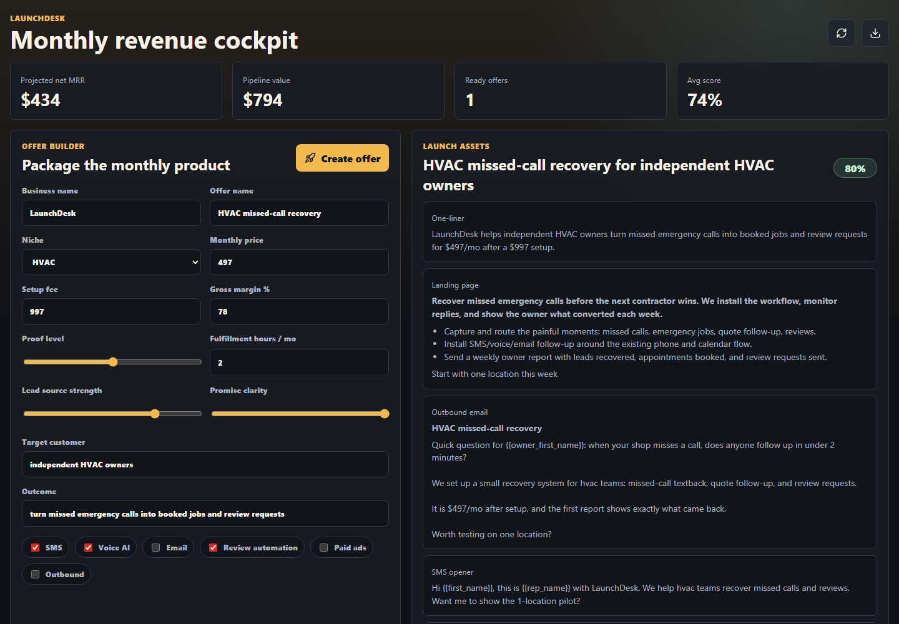

Package one offer
Choose a niche, price the service, clarify the promise, and see whether the economics can work.
Free open-source GitHub service | MIT License
LaunchDesk is a public MIT-licensed repo builders can fork, self-host, and adapt to package an offer, generate first-launch copy, track early leads, and keep the work honest.

Choose a niche, price the service, clarify the promise, and see whether the economics can work.
Create the one-liner, landing copy, outbound email, SMS opener, risks, and onboarding checklist.
Add real leads, move them through stages, export data, and keep learning from actual replies.
The point
LaunchDesk does not promise easy money. It gives people a free open-source system for making a clear offer, doing the outreach, running a pilot, and improving from evidence.